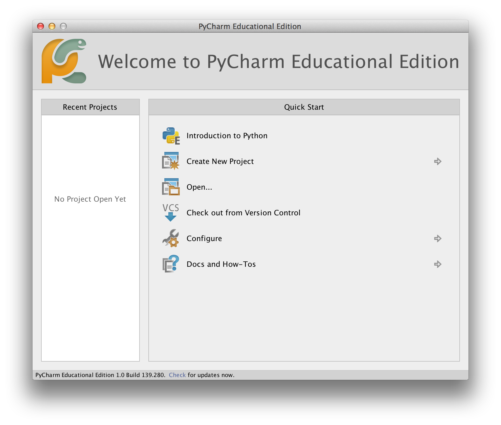
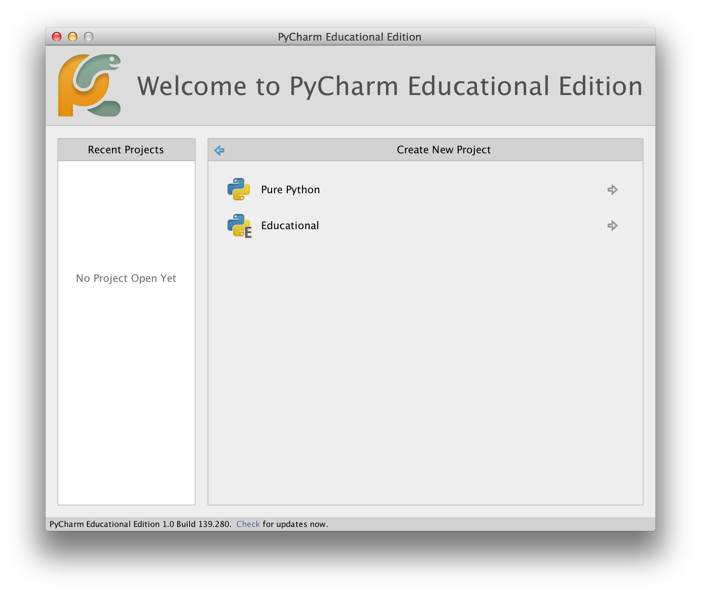
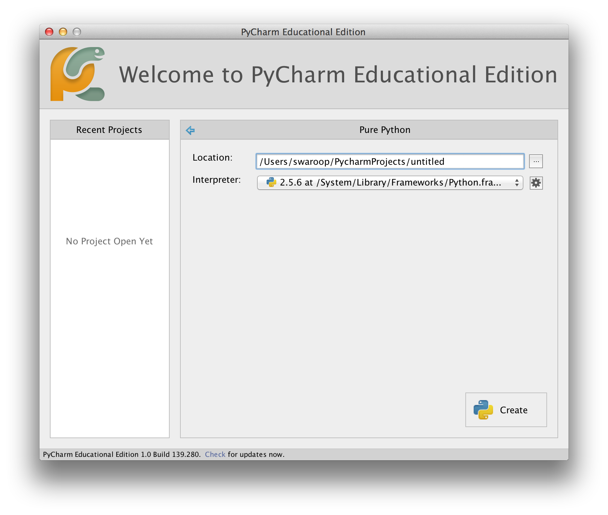
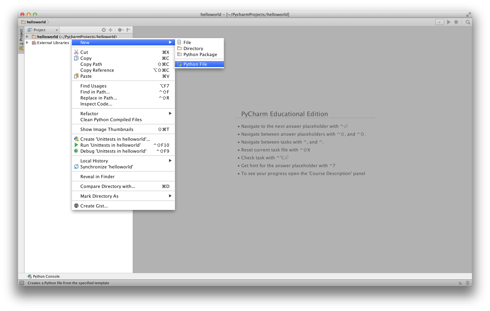
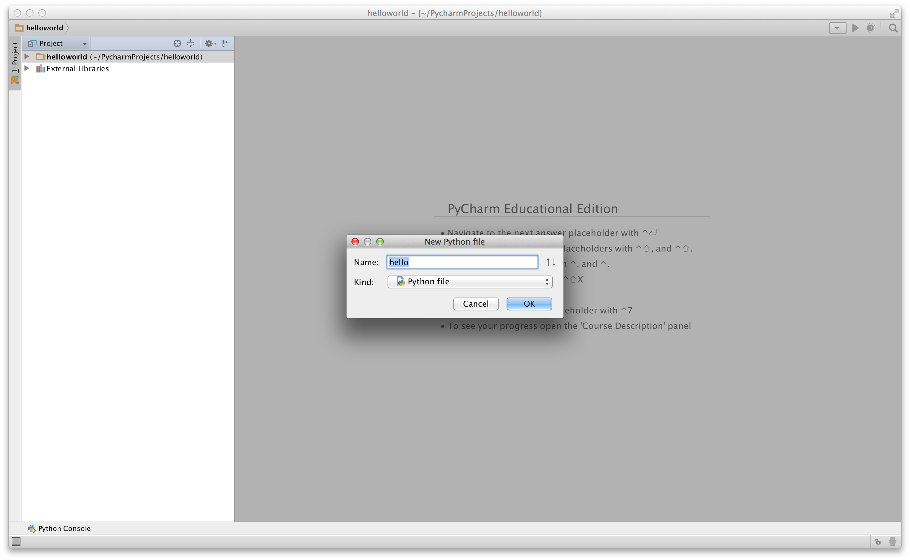
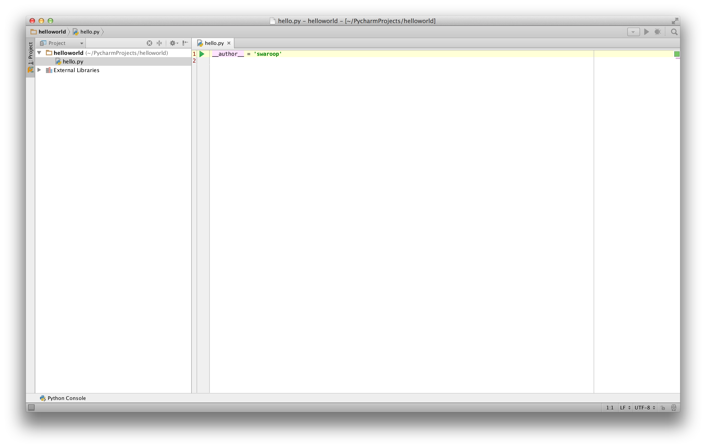
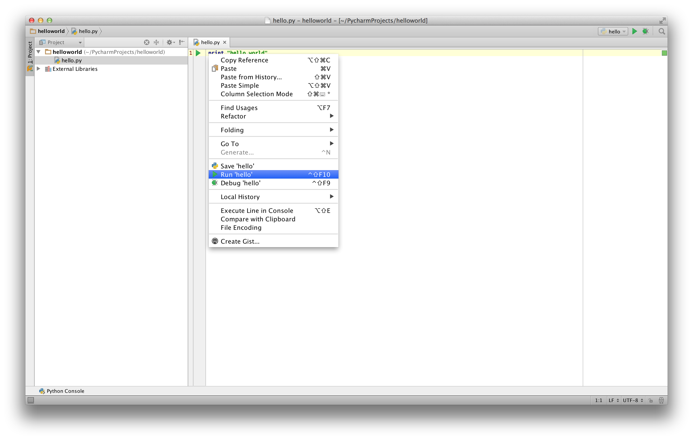
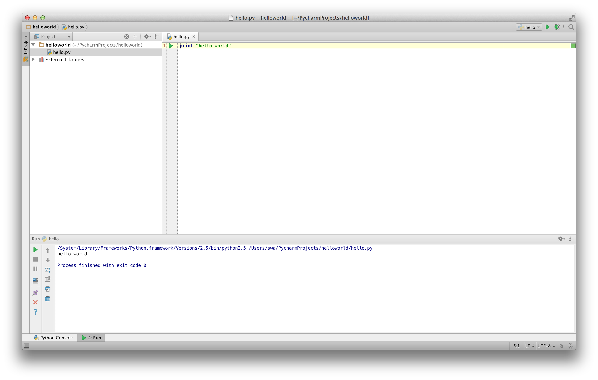
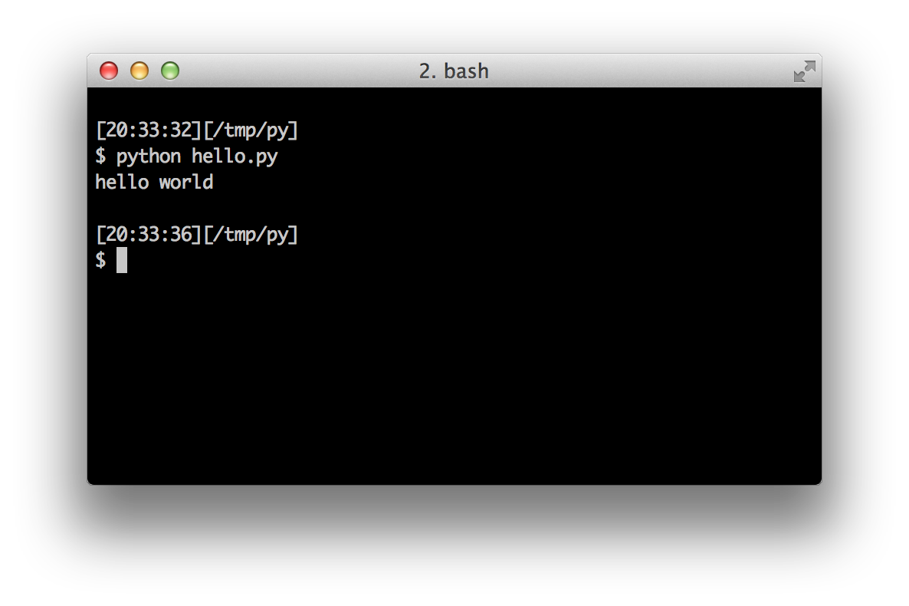

گام های نخست
اکنون خواهیم دید که چگونه یک برنامۀ سنتی 'Hello World' را در پایتون اجرا کنیم. در این بخش یاد می گیرید که چگونه برنامه های پایتون را بنویسید، ذخیره و اجرا کنید.
برای اجرای یک برنامه در پایتون دو روش وجود دارد - استفاده از خط فرمان مفسر تعاملی یا استفاده از یک فایل منبع. اکنون هر دو روش را بررسی خواهیم کرد.
استفاده از خط فرمان مفسر
ترمینال سیستم عامل خود را باز کنید (همانطور که در Installation توضیح داده شد). و سپس python3 را تایپ کنید و کلید [enter] را فشار دهید.
پس از اجرای پایتون، باید <<< را ببینید که می توانید شروع به وارد کردن دستورات در آن کنید. این قسمت خط فرمان مفسر پایتون نام دارد.
در خط فرمان مفسر پایتون عبارت زیر را تایپ کنید:
print("Hello World")
سپس کلید [enter] را فشار دهید. باید عبارت Hello World را بر روی صفحه نمایش مشاهده کنید.
در اینجا نمونه ای از چیزی را می بینید که هنگام استفاده از یک رایانه Mac OS X باید مشاهده کنید. جزئیات مربوط به نرم افزار پایتون، با توجه به رایانه شما متفاوت خواهد بود، اما بخش مربوط به خط فرمان (یعنی از <<< به بعد) صرف نظر از سیستم عامل باید یکسان باشد.
$ python3
Python 3.6.0 (default, Jan 12 2017, 11:26:36)
[GCC 4.2.1 Compatible Apple LLVM 8.0.0 (clang-800.0.38)] on darwin
Type "help", "copyright", "credits" or "license" for more information.
>>> print("Hello World")
Hello World
توجه داشته باشید که پایتون بدون درنگ خروجی را به شما نشان می دهد! چیزی که الان وارد کردید، یک دستور ساده پایتون است. ما از print برای چاپ هر مقداری که به آن می دهیم استفاده می کنیم (همان طور که از نامش پیداست). در اینجا، متن 'Hello World' را به آن داده ایم و این متن نیز بلافاصله بر روی صفحه چاپ می شود.
چگونه از خط فرمان مفسر خارج شویم
اگر از یک GNU/Linux یا OS X استفاده می کنید، می توانید با فشردن [ctrl + d] یا وارد کردن ()exit (نکته: به یاد داشته باشید که حتماً پرانتزها باید وارد شود، ()) و سپس با فشردن کلید [enter] از خط فرمان مفسر خارج شوید.
اگر از خط فرمان ویندوز استفاده می کنید، [ctrl + z] را وارد کنید و کلید [enter] را بزنید.
انتخاب یک ویرایشگر
نمی توانیم هر بار که می خواهیم چیزی را اجرا کنیم، برنامۀ خود را در خط فرمان مفسر تایپ کنیم. بنابراین باید برنامه ها را در فایل ها ذخیره کنیم تا بتوانیم هر بار که خواستیم آن ها را اجرا کنیم.
برای ایجاد فایل های منبع پایتون، به یک نرم افزار ویرایشگر نیاز داریم که بتوانیم در آن کد را تایپ و ذخیره کنیم. یک ویرایشگر مناسب برای برنامه نویسی، کار شما را هنگام نوشتن فایل های منبع بسیار آسان تر می کند. بنابراین، انتخاب ویرایشگر واقعاً مهم است. باید ویرایشگر را همان طوری انتخاب کنید که خودرویی را که می خواهید بخرید انتخاب می کنید. یک ویرایشگر خوب به شما کمک می کند برنامه های پایتون را به سادگی بنویسید، مسیر برنامه نویسی را برایتان راحت تر می کند و به شما کمک می کند سریع تر و ایمن تر به مقصد خود، یعنی رسیدن به هدفتان، برسید.
یکی از ابتدایی ترین قابلیت های مورد نیاز، هایلات کردن نحوی (syntax highlighting) است که بخش های مختلف برنامه پایتون شما را با رنگ های گوناگونی نشان می دهد تا بتوانید برنامه خود را بهتر ببینید و نحوۀ اجرای آن را درک کنید.
اگر نمی دانید از کجا شروع کنید، استفاده از نرم افزار PyCharm Educational Edition را به شما پیشنهاد می کنم که در ویندوز، Mac OS X و GNU/Linux در دسترس است. جزئیات بیشتر در بخش بعد آمده است.
اگر از ویندوز استفاده می کنید، از Notepad استفاده نکنید - این نرم افزار انتخاب مناسبی نیست زیرا هایلات کردن نحوی ندارد و مهم تر از آن از تورفتگی متن نیز پشتیبانی نمی کند، درحالی که همانطور که بعداً خواهیم دید، تورفتگی در شرایط ما امری بسیار مهم است. ویرایشگرهای مناسب این کار را به صورت خودکار انجام می دهند.
اگر برنامه نویس باتجربه ای هستید، احتمالاً از Vim یا Emacs استفاده می کنید.نیازی به گفتن نیست که این دو از قدرتمندترین ویرایشگرها هستند و استفاده از آنها برای نوشتن برنامه های پایتون برای شما بسیار مفید خواهد بود. من شخصاً برای بیشتر برنامه هایم از هردوی آنها استفاده می کنم، و حتی یک (https://vim.swaroopch.com/)[کتاب کامل دربارۀ Vim] نوشته ام.
اگر مایل باشید برای یادگیری Vim یا Emacs وقت بگذارید، اکیداً توصیه می کنم کار با یکی از آنها را خیلی خوب یاد بگیرید زیرا در بلند مدت برایتان مفید واقع خواهد شد. با این حال، همانگونه که پیش تر گفتم، افراد مبتدی می توانند کار خود را با PyCharm آغاز کنند و در حال حاضر به جای تمرکز بر ویرایشگر، تمرکز خود را بر یادگیری پایتون بگذارند.
بار دیگر تاکید می کنم که لطفاً یک ویرایشگر مناسب انتخاب کنید؛ یک ویرایشگر خوب می تواند نوشتن برنامه های پایتون را لذت بخش تر و آسان تر کند.
اگر به بررسی مفصل تر دربارۀ این موضوع علاقه مند هستید، Finding the Perfect Python Code Editor را مطالعه کنید.
PyCharm
ویرایشگر PyCharm Educational Edition رایگان است که می توانید از آن برای نوشتن برنامه های پایتون استفاده کنید.
هنگامی که PyCharm را باز می کنید، چنین صفحه ای را خواهید دید. روی Create New Project کلیک کنید:

گزینه Pure Python را انتخاب کنید:

عبارت untitled را به عنوان محل پروژه به helloworld تغییر دهید، باید جزئیاتی مشابه تصویر زیر را مشاهده کنید:

بر روی دکمۀ Create کلیک کنید.
در نوار کناری، روی helloworld راست کلیک کنید و گزینۀ New -> Python File را انتخاب کنید:

New -> Python File">از شما خواسته می شود نام فایل را تایپ کنید، hello را وارد کنید:

اکنون می بینید که یک فایل برای شما باز شده است:

خطوطی را که از قبل در فایل وجود دارد را پاک کنید، سپس عبارت زیر را وارد کنید:
print("hello world")
اکنون روی کدی که تایپ کردید راست کلیک کنید (بدون اینکه متن را انتخاب کنید)، و بر روی 'Run 'hello کلیک کنید.

اکنون باید خروجی برنامۀ خود (چیزی را که برنامه چاپ می کند) را مشاهده کنید:

خب! برای شروع کار مراحل زیادی را پشت سر گذاشتیم، اما از اینجا به بعد، هر زمان از شما خواستیم فایل جدیدی ایجاد کنید، به خاطر داشته باشید که در سمت چپ روی helloworld کلیک راست کنید -> Python File <- New و همان مراحلی را که در بالا برای وارد کردن و اجرای برنامه توضیح دادیم، دنبال کنید.
می توانید برای اطلاعات بیشتر دربارۀ PyCharm به صفحۀ PyCharm Quickstart مراجعه کنید.
Vim
- برای شروع Vim را نصب کنید.
- کاربران Mac OS X باید بستۀ
macvimرا از طریق HomeBrew نصب کنند. - کاربران ویندوز باید "Self-installing executable" را از Vim website دانلود کنند.
- کاربران GNU/Linux باید Vim را از مخازن نرم افزاری توزیع خود دریافت کنند؛ برای مثال، کاربران Debian و Ubuntu می توانند بستۀ
vimرا نصب کنند.
- کاربران Mac OS X باید بستۀ
- افزونۀ jedi-vim را برای تکمیل خودکار نصب کنید.
- بستۀ پایتون مربوط به
jediرا نصب کنید:pip install -U jedi
Emacs
- نرم افزار +Emacs 24 را نصب کنید.
- کاربران Mac OS X باید Emacs را از http://emacsformcosx.com دریافت کنند.
- کاربران ویندوز باید Emacs را از طریق http://ftp.gnu.org/gnu/emacs/windows/ دانلود کنند.
- کاربران GNU/Linux باید Emacs را از مخازن نرم افزاری توزیع خود دریافت کنند؛ برای مثال کاربران Debian و Ubuntu می توانند بستۀ
emacs24را نصب کنند.
- در مرحلۀ بعد، ELPY را نصب کنید.
استفاده از یک فایل منبع
اکنون به برنامه نویسی برگردیم. یک رسم قدیمی وجود دارد که هرگاه زبان برنامه نویسی جدیدی را می آموزید، نخستین برنامه ای که می نویسید و اجرا می کنید، برنامه 'Hello World' است - برنامه ای که هنگام اجرا تنها عبارت 'Hello World' را نمایش می دهد. همانطور که Simon Cozens1 می گوید: «دعای سنتی برای خدایان برنامه نویسی است که تا به شما کمک کنند زبان را بهتر یاد بگیرید ».
ویرایشگر موردنظر خود را باز کنید، برنامۀ زیر را وارد کنید و آن را با نام hello.py ذخیره کنید.
اگر از PyCharm استفاده می کنید، پیش تر نحوۀ اجرای برنامه را از فایل منبع را توضیح داده ایم.
برای سایر ویرایشگرها، یک فایل جدید به نام hello.py باز کنید و عبارت زیر را تایپ کنید:
print("hello world")
فایل را کجا باید ذخیره کنید؟ در هر پوشه ای که محل آن را می دانید. اگر متوجه منظور این جمله نمی شوید، یک پوشه جدید ایجاد کنید و از آن محل برای ذخیره و اجرای تمام برنامه های پایتون خود استفاده کنید:
- در Mac OS X عبارت
tmp/py/ - در GNU/Linux عبارت
tmp/py/ - در Windows عبارت
C:\py
برای ایجاد پوشۀ بالا (متناسب با سیستم عاملی که استفاده می کنید)، از دستور mkdir در ترمینال استفاده کنید، برای مثال: mkdir /tmp/py.
مهم: همیشه مطمئن شوید که پسوند فایل را py. قرار داده اید، به عنوان مثال: foo.py.
برای اجرای برنامۀ پایتون خود:
- یک پنجرۀ ترمینال باز کنید (برای نحوه انجام این کار به بخش Installation مراجعه کنید).
- با استفاده از Change directory به پوشه ای بروید که فایل را در آن ذخیره کردید، برای مثال:
cd /tmp/py - برنامه را با استفاده از وارد کردن دستور
python hello.pyاجرا کنید. خروجی به شکل زیر خواهد بود:
$ python hello.py
hello world

اگر یک خروجی مانند بالا دریافت کردید، تبریک می گویم! شما با موفقیت اولین برنامۀ پایتون خود را اجرا کردید. شما با موفقیت سخت ترین بخش یادگیری برنامه نویسی، یعنی شروع و اجرای اولین برنامه،را پشت سر گذاشتید!
اگر با خطا مواجه شدید، برنامه را دقیقاً همان طوری که در بالا نشان داده شد وارد کنید و دوباره آن را اجرا کنید. توجه کنید که پایتون به حروف بزرگ و کوچک حساس است یعنی print با Print برابر نیست - به حرف کوچک p مورد اول و حرف بزرگ P مورد دوم توجه کنید. همچنین مطمئن شوید پیش از نخستین کاراکتر در هر خط، هیچ فاصله یا یک Tab وجود نداشته باشد؛ بعداً خواهیم دید که چرا این موضوع مهم است.
نحوۀ عملکرد
یک برنامۀ پایتون از مجموعه ای از دستورات تشکیل شده است. در نخستین برنامۀ ما فقط یک دستور وجود دارد. در این دستور، دستور print را فراخوانی می کنیم و متن "hello world" را به آن می دهیم.
دریافت کمک
اگر به اطلاعات سریعی دربارۀ هر تابع یا دستوری در پایتون نیاز دارید، می توانید از قابلیت داخلی help استفاده کنید. این قابلیت به ویژه هنگام استفاده از خط فرمان مفسر، بسیار مفید است. برای مثال، help('len') را اجرا کنید، این دستور راهنمای تابع len را نمایش می دهد که برای شمارش تعداد آیتم ها استفاده می شود.
نکته: برای خروج از بخش راهنما (help)، کلید q را فشار دهید.
به طور مشابه، می توانید دربارۀ تقریباً هر چیزی در پایتون اطلاعات به دست آورید. بررای آشنایی بیشتر دربارۀ خود قابلیت help از دستور ()help استفاده کنید!
اگر لازم است دربارۀ عملگرهایی مانند return کمک دریافت کنید، باید آن ها را داخل علامت نقل قول (' ')قرار دهید، برای مثال، help('return') تا پایتون در تشخیص اینکه دربارۀ چه چیزی سوال می کنیم دچار سردرگمی نشود.
جمع بندی
اکنون باید بتوانید برنامه های پایتون را به آسانی بنویسید، ذخیره کنید و اجرا کنید.
حالا که یک کاربر پایتون هستید، بیایید با مفاهیم بیشتری از پایتون آشنا شویم.
[1^]: نویسندۀ کتاب شگفت انگیز 'Beginning Perl'